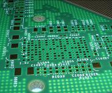

Die Firma Ines Kröner Consulting (IKC) wurde am 02. Februar 2010 durch Ines Kröner gegründet.
Unter Wir über uns erfahren Sie etwas über die Kompetenzen der IKC. Sie können sich über berufliche Erfahrungen und Abschlüsse informieren.
Der Firmensitz ist im Bundesstaat Bayern in Schongau, ca. eine Autostunde südwestlich von München. Klicken Sie über nähere Einzelheiten Kontakt.
Die IKC beschäftigt sich mit der fachlichen Betreuung von Leiterplatten-Kunden und Zulieferern der Leiterplattenindustrie. Die Kompetenz liegt hierbei in der technischen und betriebswirtschaftlichen Betreuung von Produktionsprozessen sowie in Optimierungsprozessen hinsichtlich Durchlauf, verwendeter Technologie und der Erhöhung der Ausbeute.
Mehr hierzu finden Sie unter Leistungen.